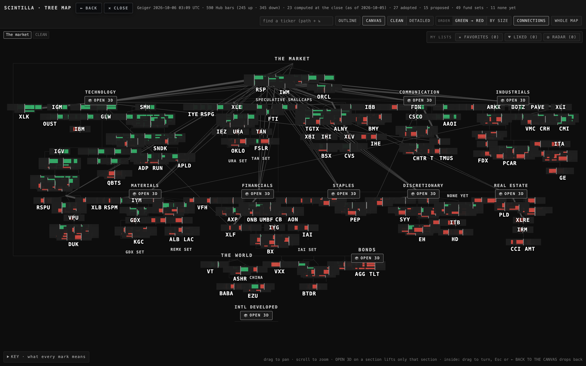
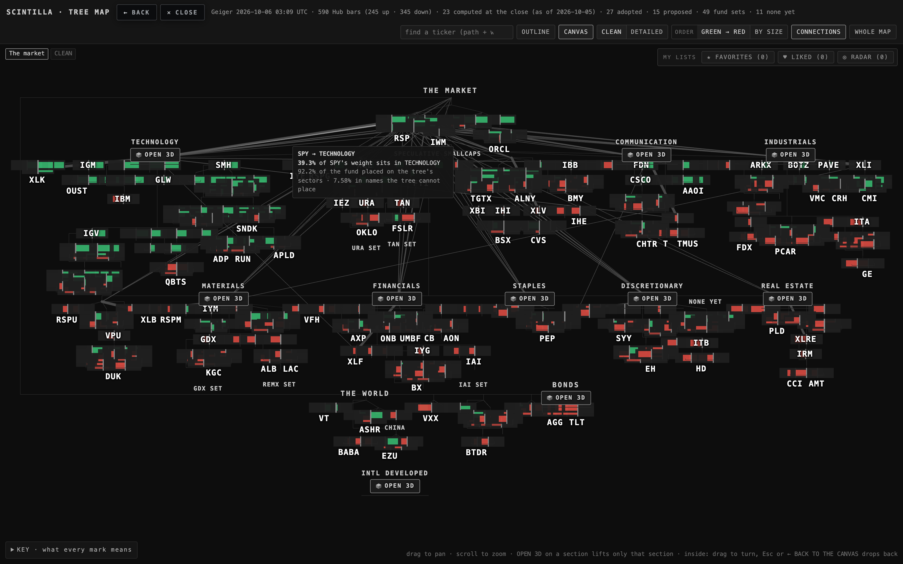
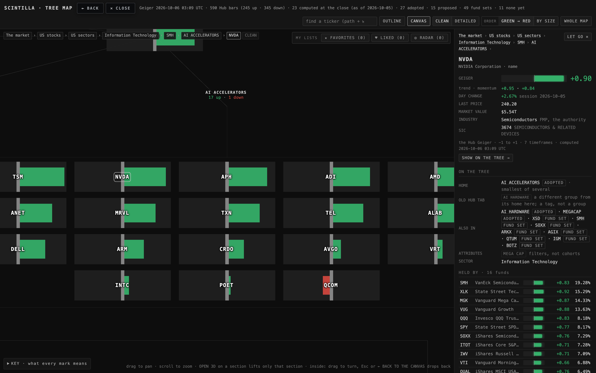
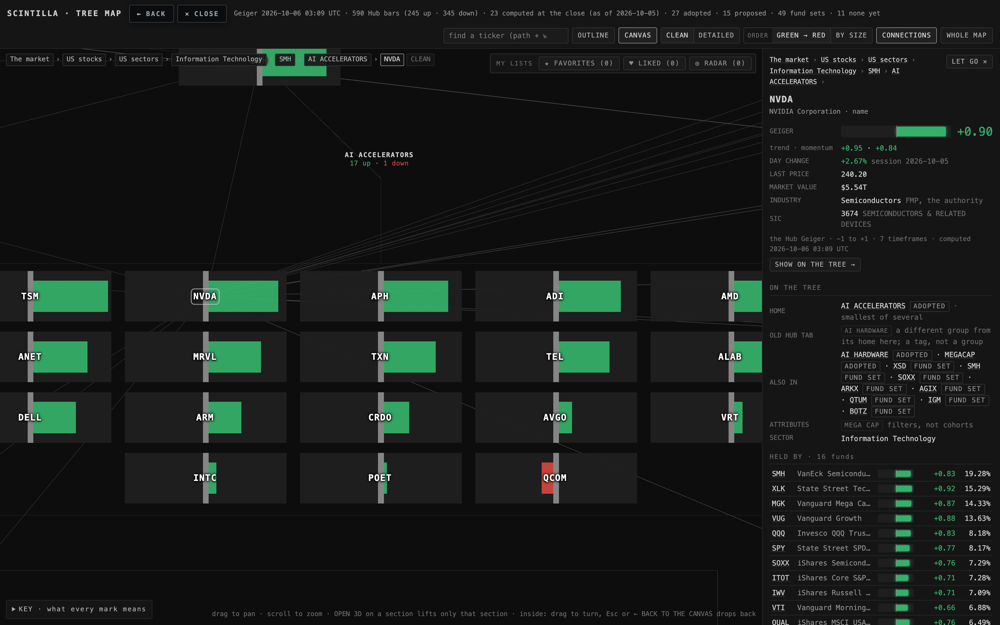
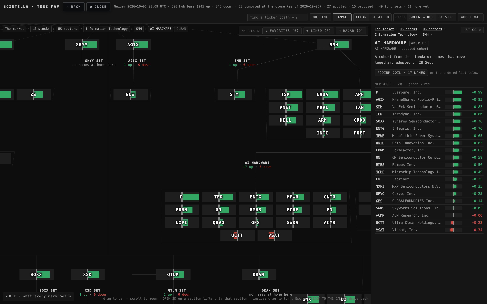
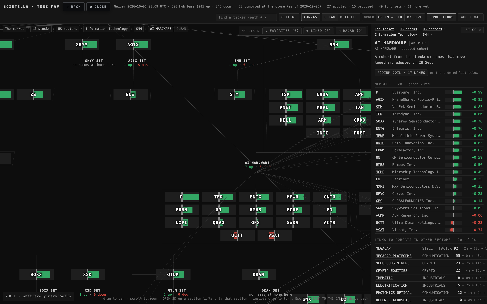

What this is. The tree you know (the Hub's TREE tab), with its connections drawn as branches of the same tree. Nothing else changed: same tree, same layout, same camera, same labels, same CLEAN / DETAILED, same order, same podium. One new button, CONNECTIONS, on by default; off gives you exactly the live tree.
Open it: deliverables/20261005/tree-live-connected/index.html. The live tab for comparison: deliverables/20260929/tree-map/index.html.
Pictures · live tab on the left, connected on the right · same angle, 1680 × 1050






What was added, one line each
| 1 · the index layer | SPY, QQQ, DIA, IWM, RSP branch from THE MARKET and each runs a line to every sector it holds ≥ 0.5 % of; thickness = the weight; the number on hover. The 11 sector SPDRs carry the same weighted line to their sector. 5 branches + 60 weighted lines. |
| 2 · a ticker's connections | Click a name: thin lines to every fund on the tree that holds it and to its comps peers in other sectors; quiet until clicked; the card lists them (weights, the peer's sector, the peer source). A target the CLEAN picture folds away (no reading) is listed, not drawn. |
| 3 · cross-sector cohort links | Click a cohort: its links to cohorts in other sectors, the strongest first, at most 20, as faint arcs; the card lists them with the count = shared members + comps peer pairs + narrow funds both sit in. |
| 4 · nothing else | Same camera, same layout, same labels, same modes. One toggle, CONNECTIONS (on by default, remembered per browser). Inside an opened section or the podium the connections hide with the rest of the whole tree. |
Where each number comes from
data/connections-20261005.json is T14's data file, reused as data only (T14's page and look are not used). It was built read-only from the Hub's dated exports: etf_holdings (62 funds, 12,795 rows, read 6 Oct 00:56 UTC) gives every index's weight by sector and every fund that holds each name; peer_sources (FMP ∪ Massive, loaded 1 Oct) gives the comps peers; the tree's own cohorts give the cross-sector links (310 in all). An index's weight in a sector is a share of the whole fund: what the tree cannot place by sector is printed as unplaced, never re-scaled away (IWM: most of its 1,988 small caps).
The tree itself is the live one: tree.json, the live Geigers from the chart API, the scout Geiger where the full one is missing — all unchanged files.
What could be wrong
The holdings weights are as of the 26 Sep holdings read and may differ a little from the HELD BY table the live card already prints (which reads tree.json's own copy). Comps peers are the FMP and Massive peer lists, not suppliers or customers — no such data exists on the Hub, so none is drawn. A cohort's "sector" is the sector heading its branch hangs from; a cohort under STYLE · FACTOR or BROAD MARKET links to a sector cohort because they are different headings, not because one is a sector. The 60 weighted lines at the zoom-out are quiet but they are there: if that is too much at home, the index lines can show on hover of an index only (a decision below).
What was not done
No change to the live TREE tab or to the Hub's index.html; nothing deployed. No supplier / customer links (no data). No new layout: the five indexes were not moved into a band of their own above the sectors, because rule 4 (same layout) wins — they branch from THE MARKET where they already sit. T13's and T14's pages and looks were not reused.
Proof
Headless Chrome with software WebGL (SwiftShader), 1680 × 1050 at scale 2, the same scripted walk on the live page and this one (proof-t15.mjs, results in shots/t15-proof.json): 0 page errors on both; the camera pose and the screen place of THE MARKET, TECHNOLOGY, UTILITIES, SPY and NVDA equal on both pages at every moment; 5 + 60 index lines; NVDA 20 lines; AI HARDWARE 20 arcs; the hover prints 39.3 %. Hub tests: tests/tree-live-connected-t15.test.mjs (4 tests, among them: the copy differs from the live folder only by the four added files and seven one-line hooks each tagged T15).
Decisions for Alan
| 1 | The 60 index → sector lines at home: always on (as now), or only when an index is hovered or clicked. Recommendation: keep them on — they are the "connection of things under technology to the indexes" you asked for, and the toggle turns them off in one click. |
| 2 | A cohort's arcs: its own strongest 20 (as now), or only the tree-wide top 20 links. Recommendation: its own 20 — every cohort then has something to show when clicked. |
| 3 | Whether this replaces the live TREE tab. Recommendation: yes, once you have clicked around it: with CONNECTIONS off it is the live tree to the pixel, so nothing is lost. |
PAGE SPECS
Folder: deliverables/20261005/tree-live-connected/ = a copy of deliverables/20260929/tree-map/ (without its shots) + connections.js + data/connections-20261005.json + proof-t15.mjs + this page. Hooks: 4 lines in map3d.js (positions follow, visibility follows the whole tree, a line under the pointer prints its number, the module mounts into the scene), 3 lines in index.html (import, module start, the card's section). Lines: three.js Line2 (LineSegments2 / LineMaterial, width in CSS px: 0.6 + 4.4 × (weight/100)^0.7 → 1.8 % = 0.9 px, 39 % = 3 px, 98 % = 4.9 px) for the weighted index lines; LineSegments for a name's lines; 32-point quadratic arcs for the cohort links. Colours: the tree's greys only (0x3c3c3c branch, 0x4e4e4e weighted, 0x9a9a9a lit on hover, 0x484848 held-by, 0x6a6a6a peer, 0x5a5a5a arc). Toggle remembered as localStorage tree.connections; ?conn=0 opens it off. Proof: node proof-t15.mjs [base url]; it stops with an error if WebGL did not render — no fallback picture.